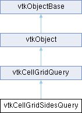

|
Etrek
|
|
Etrek
|
A cell-grid query for enumerating sides of cells. More...
#include <vtkCellGridSidesQuery.h>

Classes | |
| struct | SideSetArray |
| A structure created by the GetSideSetArrays() method for responders to use. More... | |
Public Types | |
| enum | SideFlags : int { VerticesOfEdges = 0x01 , VerticesOfSurfaces = 0x02 , EdgesOfSurfaces = 0x04 , VerticesOfVolumes = 0x08 , EdgesOfVolumes = 0x10 , SurfacesOfVolumes = 0x20 , SurfacesOfInputs = 0x20 , EdgesOfInputs = 0x14 , VerticesOfInputs = 0x0b , AllSides = 0x3f , NextLowestDimension = 0x25 } |
| An enum specifying which side(s) each responder should generate. More... | |
| enum | PassWork : int { HashSides = 0 , Summarize = 1 , GenerateSideSets = 2 } |
| An enum specifying the work responders should perform for each pass. More... | |
| enum | SummaryStrategy { Winding , AnyOccurrence , Boundary } |
| enum | SelectionMode { Input , Output } |
| Indicate how output should be generated or marked so selection works as expected. More... | |
Public Member Functions | |
| vtkTypeMacro (vtkCellGridSidesQuery, vtkCellGridQuery) | |
| void | PrintSelf (ostream &os, vtkIndent indent) override |
| vtkSetMacro (PreserveRenderableInputs, vtkTypeBool) | |
| vtkGetMacro (PreserveRenderableInputs, vtkTypeBool) | |
| vtkBooleanMacro (PreserveRenderableInputs, vtkTypeBool) | |
| vtkSetMacro (OmitSidesForRenderableInputs, vtkTypeBool) | |
| vtkGetMacro (OmitSidesForRenderableInputs, vtkTypeBool) | |
| vtkBooleanMacro (OmitSidesForRenderableInputs, vtkTypeBool) | |
| vtkSetMacro (OutputDimensionControl, int) | |
| vtkGetMacro (OutputDimensionControl, int) | |
| vtkBooleanMacro (OutputDimensionControl, int) | |
| vtkSetEnumMacro (Strategy, SummaryStrategy) | |
| vtkGetEnumMacro (Strategy, SummaryStrategy) | |
| void | SetStrategyToWinding () |
| void | SetStrategyToAnyOccurrence () |
| void | SetStrategyToBoundary () |
| virtual void | SetStrategy (int strategy) |
| This method exists for ParaView to set the strategy. | |
| vtkSetEnumMacro (SelectionType, SelectionMode) | |
| vtkGetEnumMacro (SelectionType, SelectionMode) | |
| virtual void | SetSelectionType (int selnType) |
| This method exists for ParaView to set the selection mode. | |
| bool | Initialize () override |
| void | StartPass () override |
| bool | IsAnotherPassRequired () override |
| bool | Finalize () override |
| Override this if your query-result state requires finalization. | |
| std::unordered_map< vtkStringToken, std::unordered_map< vtkStringToken, std::unordered_map< vtkIdType, std::set< int > > > > & | GetSides () |
| std::vector< SideSetArray > | GetSideSetArrays (vtkStringToken cellType) |
| Return arrays of cell+side IDs for the given cellType. | |
| vtkGetObjectMacro (SideCache, vtkCellGridSidesCache) | |
| virtual void | SetSideCache (vtkCellGridSidesCache *cache) |
| Public Member Functions inherited from vtkCellGridQuery | |
| vtkTypeMacro (vtkCellGridQuery, vtkObject) | |
| vtkGetMacro (Pass, int) | |
| Return the current pass (the number of times each responder has been evaluated so far). | |
| Public Member Functions inherited from vtkObject | |
| vtkBaseTypeMacro (vtkObject, vtkObjectBase) | |
| virtual void | DebugOn () |
| virtual void | DebugOff () |
| bool | GetDebug () |
| void | SetDebug (bool debugFlag) |
| virtual void | Modified () |
| virtual vtkMTimeType | GetMTime () |
| void | PrintSelf (ostream &os, vtkIndent indent) override |
| void | RemoveObserver (unsigned long tag) |
| void | RemoveObservers (unsigned long event) |
| void | RemoveObservers (const char *event) |
| void | RemoveAllObservers () |
| vtkTypeBool | HasObserver (unsigned long event) |
| vtkTypeBool | HasObserver (const char *event) |
| vtkTypeBool | InvokeEvent (unsigned long event) |
| vtkTypeBool | InvokeEvent (const char *event) |
| std::string | GetObjectDescription () const override |
| unsigned long | AddObserver (unsigned long event, vtkCommand *, float priority=0.0f) |
| unsigned long | AddObserver (const char *event, vtkCommand *, float priority=0.0f) |
| vtkCommand * | GetCommand (unsigned long tag) |
| void | RemoveObserver (vtkCommand *) |
| void | RemoveObservers (unsigned long event, vtkCommand *) |
| void | RemoveObservers (const char *event, vtkCommand *) |
| vtkTypeBool | HasObserver (unsigned long event, vtkCommand *) |
| vtkTypeBool | HasObserver (const char *event, vtkCommand *) |
| template<class U, class T> | |
| unsigned long | AddObserver (unsigned long event, U observer, void(T::*callback)(), float priority=0.0f) |
| template<class U, class T> | |
| unsigned long | AddObserver (unsigned long event, U observer, void(T::*callback)(vtkObject *, unsigned long, void *), float priority=0.0f) |
| template<class U, class T> | |
| unsigned long | AddObserver (unsigned long event, U observer, bool(T::*callback)(vtkObject *, unsigned long, void *), float priority=0.0f) |
| vtkTypeBool | InvokeEvent (unsigned long event, void *callData) |
| vtkTypeBool | InvokeEvent (const char *event, void *callData) |
| virtual void | SetObjectName (const std::string &objectName) |
| virtual std::string | GetObjectName () const |
| Public Member Functions inherited from vtkObjectBase | |
| const char * | GetClassName () const |
| virtual vtkTypeBool | IsA (const char *name) |
| virtual vtkIdType | GetNumberOfGenerationsFromBase (const char *name) |
| virtual void | Delete () |
| virtual void | FastDelete () |
| void | InitializeObjectBase () |
| void | Print (ostream &os) |
| void | Register (vtkObjectBase *o) |
| virtual void | UnRegister (vtkObjectBase *o) |
| int | GetReferenceCount () |
| void | SetReferenceCount (int) |
| bool | GetIsInMemkind () const |
| virtual void | PrintHeader (ostream &os, vtkIndent indent) |
| virtual void | PrintTrailer (ostream &os, vtkIndent indent) |
| virtual bool | UsesGarbageCollector () const |
Static Public Member Functions | |
| static vtkCellGridSidesQuery * | New () |
| static vtkStringToken | SelectionModeToLabel (SelectionMode mode) |
| Return a string-token with the given selection mode or vice-versa. | |
| static SelectionMode | SelectionModeFromLabel (vtkStringToken token) |
| static vtkStringToken | SummaryStrategyToLabel (SummaryStrategy strategy) |
| Return a string-token with the given summarization strategy or vice-versa. | |
| static SummaryStrategy | SummaryStrategyFromLabel (vtkStringToken token) |
| Static Public Member Functions inherited from vtkObject | |
| static vtkObject * | New () |
| static void | BreakOnError () |
| static void | SetGlobalWarningDisplay (vtkTypeBool val) |
| static void | GlobalWarningDisplayOn () |
| static void | GlobalWarningDisplayOff () |
| static vtkTypeBool | GetGlobalWarningDisplay () |
| Static Public Member Functions inherited from vtkObjectBase | |
| static vtkTypeBool | IsTypeOf (const char *name) |
| static vtkIdType | GetNumberOfGenerationsFromBaseType (const char *name) |
| static vtkObjectBase * | New () |
| static void | SetMemkindDirectory (const char *directoryname) |
| static bool | GetUsingMemkind () |
Protected Attributes | |
| vtkTypeBool | PreserveRenderableInputs { false } |
| vtkTypeBool | OmitSidesForRenderableInputs { false } |
| int | OutputDimensionControl { SideFlags::SurfacesOfInputs } |
| SelectionMode | SelectionType { SelectionMode::Input } |
| SummaryStrategy | Strategy { SummaryStrategy::Boundary } |
| vtkCellGridSidesCache * | SideCache { nullptr } |
| bool | TemporarySideCache { false } |
| std::unordered_map< vtkStringToken, std::unordered_map< vtkStringToken, std::unordered_map< vtkIdType, std::set< int > > > > | Sides |
| Protected Attributes inherited from vtkCellGridQuery | |
| int | Pass { -1 } |
| Protected Attributes inherited from vtkObject | |
| bool | Debug |
| vtkTimeStamp | MTime |
| vtkSubjectHelper * | SubjectHelper |
| std::string | ObjectName |
| Protected Attributes inherited from vtkObjectBase | |
| std::atomic< int32_t > | ReferenceCount |
| vtkWeakPointerBase ** | WeakPointers |
Additional Inherited Members | |
| Protected Member Functions inherited from vtkObject | |
| void | RegisterInternal (vtkObjectBase *, vtkTypeBool check) override |
| void | UnRegisterInternal (vtkObjectBase *, vtkTypeBool check) override |
| void | InternalGrabFocus (vtkCommand *mouseEvents, vtkCommand *keypressEvents=nullptr) |
| void | InternalReleaseFocus () |
| Protected Member Functions inherited from vtkObjectBase | |
| virtual void | ReportReferences (vtkGarbageCollector *) |
| vtkObjectBase (const vtkObjectBase &) | |
| void | operator= (const vtkObjectBase &) |
| Static Protected Member Functions inherited from vtkObjectBase | |
| static vtkMallocingFunction | GetCurrentMallocFunction () |
| static vtkReallocingFunction | GetCurrentReallocFunction () |
| static vtkFreeingFunction | GetCurrentFreeFunction () |
| static vtkFreeingFunction | GetAlternateFreeFunction () |
A cell-grid query for enumerating sides of cells.
This query runs in 3 passes (see vtkCellGridSidesQuery::PassWork):
| enum vtkCellGridSidesQuery::PassWork : int |
An enum specifying the work responders should perform for each pass.
| enum vtkCellGridSidesQuery::SideFlags : int |
An enum specifying which side(s) each responder should generate.
An enum specifying the strategy by which input hashes are summarized into output Sides entries.
| Enumerator | |
|---|---|
| Winding | The number of hash entries for a given side should be used to decide whether to include a hash's side in the output. If a side occurs an odd number of times, it should be included in the output. |
| AnyOccurrence | If a hash entry entry exists, a single side should be included in the output. |
| Boundary | Hashes for shapes (a) of dimension (d-1) that occur an odd number of times and (b) of dimension < (d-1) that occur once or more should be included in the output. (Dimension d is the dimension of the input shapes, whether they are cells or sides. |
|
overridevirtual |
Override this if your query-result state requires finalization.
Reimplemented from vtkCellGridQuery.
|
overridevirtual |
Override this if your query-result state requires initialization.
You may override this method to do additional work, but you must be careful to call the base method from your override.
Returning false will abort processing of the query. No error message will be printed.
Reimplemented from vtkCellGridQuery.
|
overridevirtual |
Override this if your query allows responders to execute in multiple phases. This method may do work in addition to returning whether another pass is needed.
Reimplemented from vtkCellGridQuery.
|
overridevirtual |
Methods invoked by print to print information about the object including superclasses. Typically not called by the user (use Print() instead) but used in the hierarchical print process to combine the output of several classes.
Reimplemented from vtkCellGridQuery.
|
overridevirtual |
Mark the start of a pass through each cell type. This increments the Pass ivar which responders can access.
You may override this method to do additional work, but you must be careful to call the base method from your override.
Reimplemented from vtkCellGridQuery.
| vtkCellGridSidesQuery::vtkGetObjectMacro | ( | SideCache | , |
| vtkCellGridSidesCache | ) |
Set/get cached hashtable of sides.
The idea is that vtkCellGridSidesCache is generic enough to accommodate a wide variety of cell types and that many of them will be capable of having sides that are conformal to cells of different types that may reside in the same cell-grid. Filters may own this cache or they may attach it to a collection of cell-grid objects that participate by inserting their cells' sides into the cache. (For example, all the cell-grids within a partitioned dataset collection may wish to insert sides in the same cache.)
| vtkCellGridSidesQuery::vtkSetEnumMacro | ( | SelectionType | , |
| SelectionMode | ) |
Set/get whether the extracted sides should be marked as selectable or whether their originating data should be selectable.
Responders should use this to either: (a) mark the output to indicate what shapes should be selected upon being picked; or (b) output different shapes so that picking implicitly results in the proper shape being picked.
The default SelectionMode::Input indicates the input data should be selected. Other values indicate the generated output sides should be selected.
| vtkCellGridSidesQuery::vtkSetEnumMacro | ( | Strategy | , |
| SummaryStrategy | ) |
Set/get the strategy responders should use to generate entries in Sides from entries in SideCache.
The default is BoundaryStrategy.
| vtkCellGridSidesQuery::vtkSetMacro | ( | OmitSidesForRenderableInputs | , |
| vtkTypeBool | ) |
Set/get whether to omit computation of sides for renderable cells.
A cell is renderable if it is of dimension 2 or less (i.e., surfaces, edges, and vertices are all renderable; volumetric cells are not). This setting, when used in combination with PreserveRenderableInputs, allows the filter to behave similar to vtkPolyData surface extraction filters; volumetric cells will have sides computed but others will be passed through from the input unaltered.
The default is false.
| vtkCellGridSidesQuery::vtkSetMacro | ( | OutputDimensionControl | , |
| int | ) |
Set/get which sides to generate given input cells/sides.
OutputDimensionControl is a bit-vector taking values from the SideFlags enumeration. It determines which sides of the input should be generated. The default is SideFlags::SurfacesOfInputs, which will only emit surfaces of volumetric cells.
| vtkCellGridSidesQuery::vtkSetMacro | ( | PreserveRenderableInputs | , |
| vtkTypeBool | ) |
Set/get whether renderable cells should be included in the output or the output should strictly contain sides of cells.
A cell is renderable if it is of dimension 2 or less (i.e., surfaces, edges, and vertices are all renderable; volumetric cells are not).
The default is false.